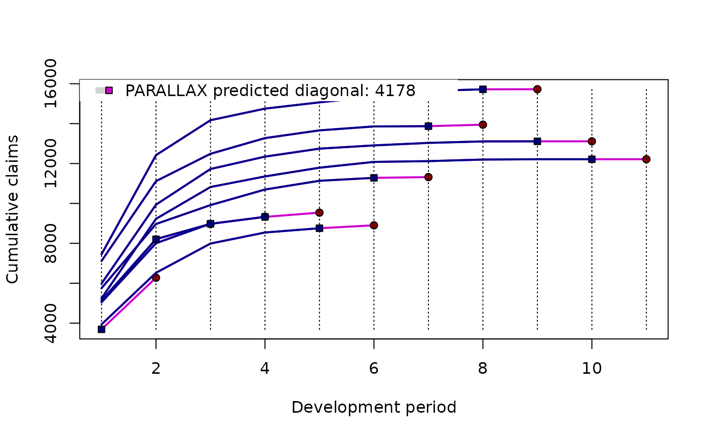
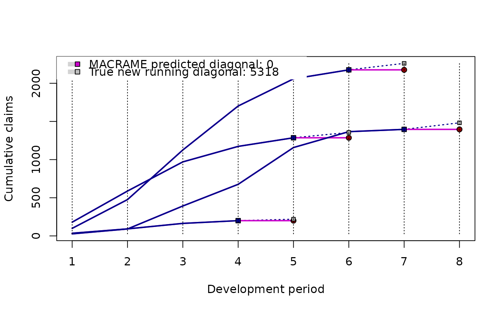

Plotting Predicted Run-Off Diagonal
plot.profilePredict.RdThe function provides a graphical visualization of a 1-step-ahead prediction
for the functional (development) profiles (so called new running diagonal) obtained
by the S3 method predict() applied to the output of the PARALLAX, REACT,
or MACRAME algorithm—the R functions parallelReserve() or mcReserve().
Usage
# S3 method for class 'profilePredict'
plot(
x,
xlab = "Development period",
ylab = "Cumulative claims",
main = "",
trueProfiles = NULL,
default.legend = TRUE,
...
)Arguments
- x
an object of the class
profileLadderwhich is the output formparallelReserve()ormcReserve()- xlab
label for the x axis
- ylab
label for the y axis
- main
title of the plot
- trueProfiles
optional parameter (set to
NULLby default) providing true profiles, if available. In such case, the predicted diagonal is also graphically compared with the true profile developments. The parameter can be a vector (of the same length as the number of rows in the run-off triangle) providing true values of the next running diagonal or it can be a matrix (an object of the classmatrixortriangle) with the dimensionsn x m(wheren x nis the dimension of the run-off triangle andm > n).- default.legend
logical to indicate whether a default plot legend (utilizing the information from the R class
profileLadder) should be provided (DEFAULT)- ...
other graphical parameters to plot
Value
A graph with the observed functional development profiles from the input run-off triangle and the predicted new running diagonal (1-step-ahead prediction)
Examples
## new running diagonal provided by PARALLAX
print(CameronMutual)
#> dev
#> origin 1 2 3 4 5 6 7 8 9 10
#> 1 5244 9228 10823 11352 11791 12082 12120 12199 12215 12215
#> 2 5984 9939 11725 12346 12746 12909 13034 13109 13113 13115
#> 3 7452 12421 14171 14752 15066 15354 15637 15720 15744 15786
#> 4 7115 11117 12488 13274 13662 13859 13872 13935 13973 13972
#> 5 5753 8969 9917 10697 11135 11282 11255 11331 11332 11354
#> 6 3937 6524 7989 8543 8757 8901 9013 9012 9046 9164
#> 7 5127 8212 8976 9325 9718 9795 9833 9885 9816 9815
#> 8 5046 8006 8984 9633 10102 10166 10261 10252 10252 10252
#> 9 5129 8202 9185 9681 9951 10033 10133 10182 10182 10183
#> 10 3689 6043 6789 7089 7164 7197 7253 7267 7266 7266
plot(predict(parallelReserve(CameronMutual)))

## new running diagonal with the true profiles
print(covid19CZ)
#> week1 week2 week3 week4 week5 week6 week7 week8
#> 01/03 - 07/03 27 91 392 676 1158 1366 1396 1482
#> 08/03 - 14/03 99 476 1126 1702 2058 2176 2261 NA
#> 15/03 - 21/03 180 588 970 1173 1286 1356 NA NA
#> 22/03 - 28/03 35 92 164 200 219 NA NA NA
plot(predict(mcReserve(covid19CZ[,4:7])), trueProfiles = covid19CZ)
